歡迎來到 PHP雲端ERP 的世界
PHP 是開發 雲端ERP 應用程式的工具組。提供簡易的介面和邏輯結構來使用豐富的函式庫，其目的是讓你加 快開發速度。使用 PHP 只需要寫少少的程式，創造力可專注在專案開發。
雲端ERP 使用手冊目錄
貳、基本資料建立
一、基本資料管理之關連作業
1.共同參數設定作業
■程式代號：CMSI01
■作業目的：系統上線前基本參數設定，未設定者無法輸入異動資料。
■輸入畫面：
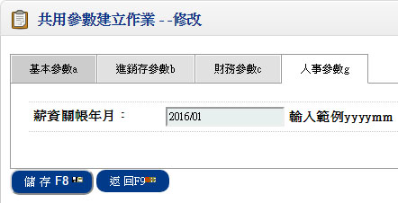- ■重點欄位說明：
- 計薪年月
- 欄位不可空白
- 此年月為薪資計算之預設年月,須人工自行維護更新
2、部門資料建立作業
■程式代號：CMSI05
■作業目的：系統上線前基本參數設定，未設定者無法輸入異動資料。
■輸入畫面：
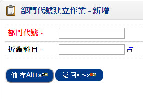 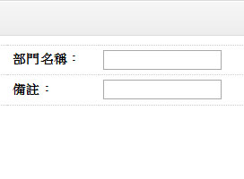- ■作業重點：
- 如無『固定資產管理系統』,折舊科目可不輸入;因折舊科目為固定資產分攤方式依部門管理分攤時之科目依據
3、職務類別建立作業
■程式代號：CMSI09
■作業目的：系統上線前基本參數設定，未設定者無法輸入異動資料。
■輸入畫面：
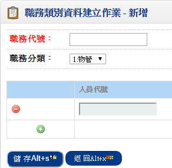 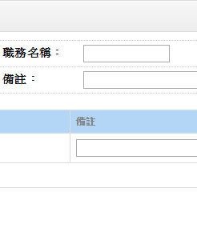- ■欄位說明：
- 職務分類
- 不可空白
- 可選擇的系統分類有二十六種
1.物管 2.生管 3.業務 4.採購 5.會計 6.出納 7.倉管 8.研發 9.製造 A品管 B.管理 C.工程 D.生技 E.船務 F.廠務 G 貿易 H 總務 I 人事 J 保稅 K 稽核 K 企畫 L 文管 M 產品 N 行政 P 外點(專櫃前抬) Z 其它
<<單頭>>
- 人員代號
- 欄位不可空白，同一個人員可從事不同職務分類的工作
<<單身>>
- ■作業重點：
- 上線前務必將人員的工作職能先行定義，系統在資料處理時做了些許管制，例如：在訂單性系統，要查詢業務人員時，若未定義業務的使用人員，無法開窗，且無法輸入業務人員
- 以下關於各種人員的權責範圍
- 物管：領料單輸入
- 生管：製令開單人員
- 業務：報價單／客戶訂單／銷貨人員／收款人員
- 採購：採購單輸入／託外加工單的輸入
- 會計：傳票處理人員
- 出納六種：應收票據／應付票據／銀行存提作業處理人員
本系統允許同一個人扮演不同的角色。
4、註記簽核建立作業
■程式代號：CMSI17
■作業目的：系統上線前基本參數設定，未設定者無法輸入異動資料。
■輸入畫面：
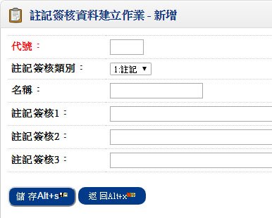- ■欄位說明：
- 註記/簽核分類
- 1.註記 2.簽核
- 代號
- 不可空白
二、本系統之基本資料
1、職等資料建立作業
■程式代號：PALI10
■作業目的：建立公司內各種類職等代號及名稱
■輸入畫面：
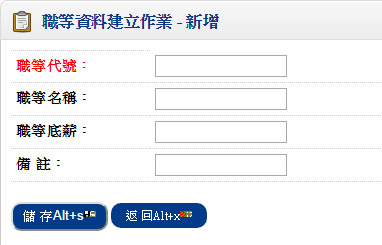- ■欄位說明：
- 職等代號
- 不可重覆建立
- 職等底薪
- 可建立該職等之基本底薪
2、學歷代號建立作業
■程式代號：PALI09
■作業目的：建立各種學歷代號及名稱
■輸入畫面：
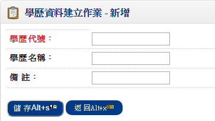- ■欄位說明：
- 學歷代號
- 不可重覆建立
3、健保計費建立作業
■程式代號：PALI04
■作業目的：健保計費建立作業
■輸入畫面：
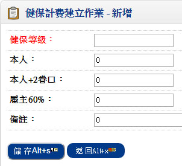
- ■欄位說明：
- 投保金額
- 輸入投保金額會自動換算其餘欄位
4、勞保計費建立作業
■程式代號：PALI02
■作業目的：勞保計費建立作業
■輸入畫面：
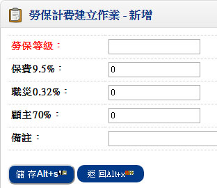 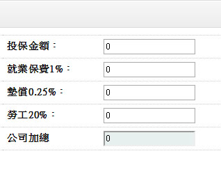- ■欄位說明：
- 投保金額
- 輸入投保金額會自動換算其餘欄位
5、保費費率設定檔
■程式代號：PALI05
■作業目的：設定勞健保各項費率
■輸入畫面：
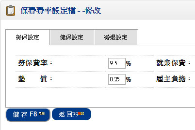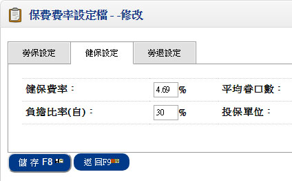
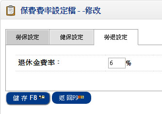
6、固定津貼建立作業
■程式代號：PALI23
■作業目的：設定員工薪資
■輸入畫面：
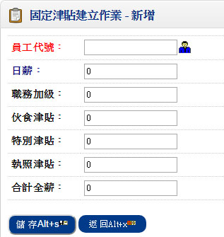 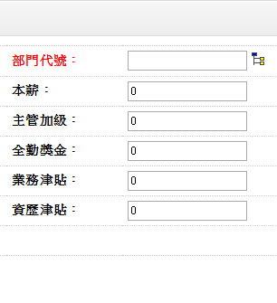7、員工基本資料建立作業
■程式代號：PALI01
■作業目的：建立員工相關基本資料及計薪條件
■輸入畫面：
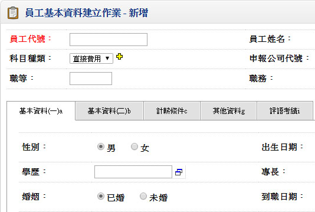▼
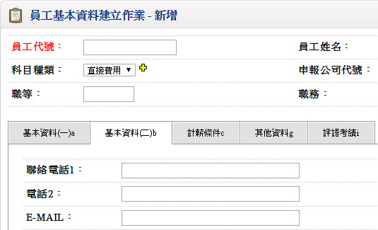▼
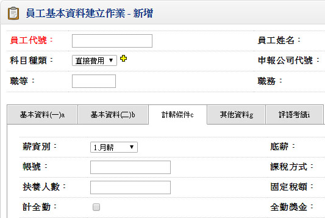▼
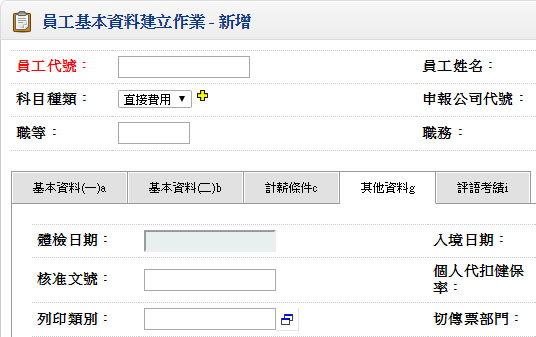- ■欄位說明：
- 員工代號
- 建立每一員工之員工代號,不可重複
- 性別
- 1.男 2.女
- 身分證號
- 非空白須檢查正確性
- 科目種類
- 1.直接費用 2.間接費用 3.管理費用 4.銷售費用 5.研發費用
- 婚姻狀況
- 1.已婚 2.未婚
- 戶籍地址
- 若有數字或英文字母或特殊符號請用全形輸入以便媒體申報作業
- 須刷卡
- 如果此員工需刷卡時,須勾選
- 主要班別
- 若員工須刷卡,應設定員工班別
- 試用期滿日
- 與到職日比較累加試用期天數
- 薪資別
- 1.月薪 2.日薪
- 底薪
- 為月薪或日薪之底薪
- 轉存方式
- B.銀行 P.郵局 C.現金
- 課稅方式
- 0.不代扣繳 1.依法扣繳 2.依固定金額扣繳
- 發薪方式
- 1.每月發放一次 2.每月發放兩次
- 計全勤
- 若計全勤須勾選
- 全勤獎金
- 若員工之全勤獎金不同時,可設定各員工之全勤獎金
基本資料表頭
基本資料:
計薪條件: